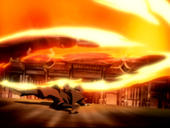

Магия огня - один из четырёх видов магии стихий в мире Аватара. Применяя её, можно создавать и контролировать огонь. Маги огня рождаются у жителей страны Огня, города Воинов Солнца и их потомков, живущих в других частях света. Уникальность магии огня в том, что, в отличие от других магий стихий, магу не требуется наличие стихии в природе - он может самостоятельно создавать огонь. Для этого маг огня использует свою ци. Согласно словам Айро, огонь - это элемент силы. Магия огня отличается агрессивным атакующим стилем и малым количеством защитных приёмов. Главная цель мага огня - подавить противника своей мощью.
Огонь
Основы магии огня
| Огненный шар | Основная техника. Ударом кулака создаётся маленький шар, летящий в направлении удара. Последовательные удары позволяют вести продолжительную атаку. Размер шара зависит от предварительной подготовки, концентрации и мастерства мага. Большие шары летят медленнее маленьких. |
|---|---|
| Огненная струя | Основная техника. Обычно, струи выпускаются из пальцев, кулаков, ладоней или ступней. Ширина струи зависит от опыта мага и площади поверхности, с которой идёт. Приём часто применяется солдатами страны Огня для разрушения различных зданий и построек. |
Простые приёмы и техники
| Огненная волна  | Вращение рукой или удар ногой с разворотом позволяет послать кольцеобразную волну огня, радиус которой увеличивается по мере отдаления от источника. Увеличенная силой кометы Созина атака достигает размеров огненного торнадо. Эту технику применял Зуко во время Агни Кай с Азулой. |
|---|---|
| Блокирование огня | Маг может погасить или перенаправить огонь, брошенный в него другим магом, посредством удара кулаком или толчка ладонью. В серии «Кипящая скала, часть 1» Чит Сэнг, защищаясь от атаки, перенаправил огонь стражника в него самого, а солдат уже блокировал пламя. |
| Огненное лезвие | Продвинутая версия огненной волны. Маг до небольшой толщины уплотняет струю огня, которая может разрезать твёрдые предметы. В серии «Погоня» Азула таким способом отпилила угол ветхого здания. В серии «Перекрёстки судьбы» Зуко разорвал водяные плети Катары. |
| Огненный обруч | Техника, продемонстрированная воинами Солнца. Из небольшого огонька широким круговым движением раздувается бóльшее пламя, которому придаётся форма правильной окружности. Обруч удерживается в воздухе, затем маг собирает огонь тем же круговым движением и гасит его. Техника не применяется в бою, а служит для совершения ритуала. |
| Огненный кинжал | Маленькое пламя, как струя, которое создается из кулаков или пальцев рук для использования в ближнем бою. В серии «Состояние Аватара» Зуко использовал эту технику, когда сражался с сестрой. Азула также демонстрировала её, когда захватила Куэя в заложники во время захвата Ба Синг Се. Корра тоже использовала эту технику. Однако, она использовала огненный кинжал не для атаки, а для того, чтобы расплавить цепи. Тем самым девушка освободила Тензина и его семью во время победного митинга Уравнителей. |
| Огненный щит | Одна из немногих защитных техник, мини-версия стены пламени. Маг создаёт небольшую огненную стену перед собой, чтобы отражать атаки и взрывы. Зуко создал небольшой щит, когда защищался от атаки Огненного убийцы в серии «Западный Храм Воздуха». |